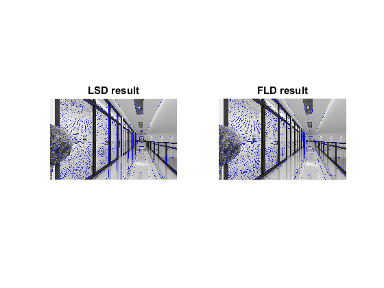

Fast Line Detector demo
Compares cv.FastLineDetector against cv.LineSegmentDetector.
Sources:
input image
img = imread(fullfile(mexopencv.root(),'test','corridor.jpg')); gray = cv.cvtColor(img, 'RGB2GRAY');
create LSD and FLD detectors
lsd = cv.LineSegmentDetector(); fld = cv.FastLineDetector();
detect the lines
tic, lines_lsd = lsd.detect(gray); toc tic, lines_fld = fld.detect(gray); toc
Elapsed time is 0.076713 seconds. Elapsed time is 0.817230 seconds.
show found lines
out_lsd = lsd.drawSegments(img, lines_lsd); out_fld = fld.drawSegments(img, lines_fld); subplot(121), imshow(out_lsd), title('LSD result') subplot(122), imshow(out_fld), title('FLD result')